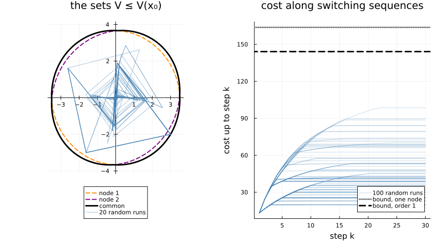

Design a controller robust to switching
A switched system with an input, whose mode is chosen by an adversary. A path-complete certificate gives a state-feedback policy and an upper bound on its worst-case cost, as in (Ninite et al., 2026), and a larger graph lowers the bound. How a certificate works explains the certificate; this page runs it from start to end.
import PathCompleteCertificates as PCC
import Clarabel
import JuMP
import Random
using Plots
const TEMPLATE = PCC.QuadraticTemplate()
const OPTIMIZER = JuMP.optimizer_with_attributes(
Clarabel.Optimizer,
"chordal_decomposition_enable" => false,
)The system
A rotation and a contraction, with the same input matrix, and the stage cost $x^\top Q x + u^\top R u$. The rotation alone never decays: the input has to bring the state to the origin, whatever the switching. The runs below start from $x_0 = (3, -2)$.
A = [[0.0 1.0; -1.0 0.0], [-0.1 0.0; 0.0 -0.95]]
B = [[1.0; 0.0;;], [1.0; 0.0;;]]
Q = [1.0 0.0; 0.0 1.0]
R = [1.0;;]
system = PCC.switched_system(A, B)
problem = PCC.OptimalControlProblem(system, Q, R)
x0 = [3.0, -2.0]A single function
On the one-node graph, the certificate is one quadratic function and one gain, a linear feedback. Its bound on the worst-case cost from $x_0$:
PCC.certify(TEMPLATE, PCC.common_graph(system), problem; optimizer = OPTIMIZER)(x0)163.77574647322515A path-complete graph
Optimal control needs a complete graph, and the primal De Bruijn graphs are. They give one function and one gain per node, and the bound drops with each order:
bounds = [
PCC.certify(TEMPLATE, PCC.de_bruijn(k, 2), problem; optimizer = OPTIMIZER)(x0) for
k in 0:2
]3-element Vector{Float64}:
163.77574647322515
144.12202408878474
141.41008099204234Most of the gain comes at order 1, with two nodes and two gains:
graph = PCC.de_bruijn(1, 2)
certificate = PCC.certify(TEMPLATE, graph, problem; optimizer = OPTIMIZER)
certificate.gains2-element Vector{Matrix{Float64}}:
[0.06467488835574522 -0.09218859427608246]
[-0.07336949323632791 -0.08724570283799467]The certificate, drawn
On the left, the set $\{x : V_a(x) \le V(x_0)\}$ of each node function, and the set $\{x : V(x) \le V(x_0)\}$ of their common function, here their minimum, with 20 closed-loop runs from $x_0$ under random switching: $V$ decreases along every run, so none leaves the set. On the right, the cost accumulated along 100 runs, below the bound of the certificate, itself below the bound of the one-node graph.
directions = [[cos(t), sin(t)] for t in range(0, 2pi; length = 400)]
level_set(f, value) = [d .* sqrt(value / f(d)) for d in directions]
left = plot(;
aspect_ratio = :equal,
framestyle = :origin,
legend = :outerbottom,
title = "the sets V ≤ V(x₀)",
)
for (a, V) in enumerate(PCC.functions(certificate))
points = level_set(x -> PCC.node_value(problem, V, x), certificate(x0))
plot!(
left,
first.(points),
last.(points);
color = (:darkorange, :purple)[a],
lw = 2,
ls = :dash,
label = "node $a",
)
end
points = level_set(certificate, certificate(x0))
plot!(left, first.(points), last.(points); color = :black, lw = 3, label = "common")
rng = Random.MersenneTwister(1)
costs = Vector{Float64}[]
for run in 1:100
trajectory = PCC.simulate(certificate, x0, 30; rng)
visited, applied = PCC.states(trajectory), PCC.inputs(trajectory)
stage = [x' * Q * x + u' * R * u for (x, u) in zip(visited, applied)]
push!(costs, cumsum(stage))
run <= 20 && plot!(
left,
first.(visited),
last.(visited);
color = :steelblue,
alpha = 0.5,
label = run == 1 ? "20 random runs" : "",
)
end
right = plot(;
xlabel = "step k",
ylabel = "cost up to step k",
legend = :bottomright,
title = "cost along switching sequences",
)
for (run, cost) in enumerate(costs)
plot!(
right,
1:30,
cost;
color = :steelblue,
alpha = 0.3,
label = run == 1 ? "100 random runs" : "",
)
end
hline!(right, [first(bounds)]; color = :grey, lw = 3, ls = :dot, label = "bound, one node")
hline!(
right,
[certificate(x0)];
color = :black,
lw = 3,
ls = :dash,
label = "bound, order 1",
)
plot(left, right; layout = (1, 2), size = (900, 500), margin = 5Plots.mm)
What it proves
Whatever the switching, the policy of the certificate costs at most $V(x_0)$ from $x_0$, and so does the best policy (see How a certificate works). The random runs above stay well below it: the bound covers the worst switching sequence, which random runs rarely meet.
maximum(last.(costs)), certificate(x0)(98.51278346536043, 144.12202408878474)This page was generated using Literate.jl.